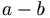
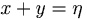
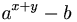
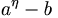
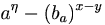
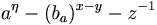

Estando en casa, se nos puede presentar una visita, como el jefe, el cuñado, la cuñada, el suegro, la suegra, o incluso alguien querido, nos puede pedir en un momento dado un vaso de hagua. Esto podía ser un problema hasta que fue escrita la guía frikipédica para la ocasión
Materiales

Vaso, imprescindible, no confundir con
vasco- Una cocina o baño
- Un vaso vacío
- Una cantidad de hagua "x
xx"
- Un recipiente donde se encuentra el hagua (llamado el punto "a")
- A tí mismo (Como observador)
- Alguien que llene el vaso con hagua. Puedes elegir entre estos tres tipos:
- Un esclavo negro de Mauritania para llenarte el vaso con hagua en caso de que ese alguien no te lo quiera llenar
- Un vasco para llenarte el vaso con hagua en caso de que ese esclavo no te lo quiera llenar
- Los bomberos (por caso de incendio)
- La ambulancia (por caso de algun accidente)
- Y por último un "jalvadoreño" para llenarte el vaso con hagua en caso de que ese vasco no te lo quiera llenar
- En caso de que nadie lo haga llamar a tu madre y ella resolvera en un abrir y cerrar de ojos este proceso tan complicado que Albert Einstein nos enseño ha hacer para que tu aprendieras

Vascos tras llenar sus vasos de hagua
Variables
Teniendo todos los materiales te los metes por el cul... listos, tendras que hacer el complicado proceso, tienes solamente cuatro esclavos ayudantes para hacerte esa tan grandiosa labor, mientras tu observas y los variables son estas
- lugar inicial del hagua = a
- lugar final del hagua = b
- cantidad de hagua = x
- cantidad de ayudantes = y
- cantidad de vasos = z
|
Como pueden apreciar la cosa se pone más complicada, pero deben de ser cuidadosos, porque si alguno de estos valores no esta controlado meticulosamente, no se podrá llenar el vaso con hagua.
Proceso
Sabiendo que:

- Es la diferencia de coordenadas

- La cantidad de ayudantes más la cantidad de agua dan ese símbolo raro, QUE NO ES UNA "N", que
- representa lo que se puede perder sin que pase nada malo

- A el lugar inicial elevado a "lo que se puede perder" con agua se le resta el lugar final

- Paso anterior simplificado

- Ahora con la variación de lugares y la probabilidad de perdida de ayudantes

- Incluyendo la posibilidad de rompimiento de vasos
Ya sabiendo las formulas para el proceso de manera adecuada debemos hacer en este orden:
- Obtienes el vaso con hagua
- Obtienes una limonada y te la empiezas a tomar
- Llamas al primer ayudante (el esclavo de Mauritania) para que pase el hagua de punto "a" al "b" (Si sale bien sáltate al paso 10)
- Pero como probablemente quiebre el vaso o derrame parte del agua pasemos al siguiente paso
- Llamas al segundo ayudante (el vasco) para que pase el hagua de punto "a" al "b" (Si sale bien sáltate al paso 10)
- Pero como probablemente lo pase al punto "c" (ni me preguntes donde queda eso) pasemos al siguiente paso
- Llamas al tercer ayudante (el "jalvadoreño") para que pase el hagua de punto "a" al "b" (Si sale bien sáltate al paso 10)
- Pero como probablemente rebalse el vaso y para colmo de una sustancia que no es hagua, pasemos al siguiente paso
- Llenas tu el vaso, pero cuidado con botar un poco de hagua sobre tu ropa porque la manchará de color... ¿transparente? Pues cojones... de algún color tiene que ser
- Puedes entonces tener el vaso ("b") con hagua ("x") y entonces serás feliz.
Posición del vaso
Es importante además colocar correctamente el vaso para su correcta ejecución
- Es muy importante que el vaso esté en posición vertical con la apertura hacia arriba
- Si la apertura del vaso está mirando hacia abajo, el hagua no se introducirá en él poniendo el suelo perdido
- Si se pone el vaso en posición horizontal ocurrirá tres cuartas partes de lo mismo
- El emisor de hagua debe estar sobre la misma vertical que el vaso y siempre en un plano superior al vaso
- Si se encontrara en la vertical pero por debajo, conseguiríamos unos bonitos zapatos mojados, pero nunca un vaso con hagua
- Si se encuentra en un plano superior pero no en la vertical, obtendríamos los mismos zapatos mojados, pero igualmente no un vaso con hagua
FAQ
- ¿Tengo un vaso pero tiene leche, que hago para que tenga hagua?
Bueno muchos de ustedes pensaran que se debe de botar la leche o incluso tomársela para después llenarla de hagua, pues eso es lo más incorrecto de todo.
Nosotros damos guías para colaborar con el medio ambiente, porque apoyamos las iguanas, entonces lo que tienes que hacer es esto:
- Fabrica un destilador de la forma de la Fig. 1 (pincha para verla mejor)
- Usa algo para calentar el vaso con leche, entonces el hagua se separa de alguna manera de la leche y se vuelve vapor que es un elemento completamente distinto al hagua, y entonces se mete en esa cosa rara y sale del otro lado como hagua otra vez. Mágico ¿no?
- Entonces la leche liquida se vuelve polvo y obtienes hagua de una u otra manera y esa hagua la pones en otro vaso pero desde luego siguiendo los pasos anteriores.
- ¿No tengo un río de vasos cerca, como consigo un vaso?
Los vasos también se consiguen en la fábrica Ikea.
- ¿Tengo un vasco, pero no un vaso?
Ve al río de vasos más cercano o consiguelo de la manera que propone la pregunta anterior.
- ¿Porque no es mejor simplemente llenar el vaso uno mismo?
Porque hay mejores cosas que hacer, SIEMPRE.
- ¿Hay alguna competencia de llenar vasos con hagua?
Sí, pero gana el que tenga más esclavos, vascos y "jalvadoreños".
Tips
- Si quieres llenar una vaso de hagua tienes que tener un vaso
- Y también hagua, ya que es imposible llenar el vaso de hagua con hagua sin dicho elemento
- Y si tienes ya un vaso con hagua ¿para qué lo quieres llenar?
- No es recomendable en ese caso vaciar el hagua para volverlo a llenar
- No le pongas más hagua de la que le cabe al vaso, porque se produce lo que en informática se conoce como Stack Overflow
- El hagua se encuentra gratis en los ríos de agua
- Los vasos se encuentran gratis en los ríos de vasos y en algunos Ikea siempre que tus bolsillos sean amplios
- El hagua tanbien se encuentra en el grifo.
- Asegurate de que estea volteado osease con el hoyito hacia arriba.
Como encontrar un rio de hagua
- Para ello ir a las cordenadas 43543 2423523 tras eso decirle al viejo que hay sentado la contraseña es Hijo de puta ven paca que te folle como a tu madre en ese caso seguir insultandole y ver como se abalanza sobre ti correr y al llegar a un rio donde hay vasos obstruyendolo cojer 3 y huir preparar dejar de leer esto porque hay una trampa para osos salta!!! en caso de que se sigas vivo volver a tu casa y descubrir a tu jefe tirandose a tu madre llorar y matar a tu jefe y extrañamente llenar el vaso de hagua automaticametne genial mataste dos pobres aves de un tiro y cuando te das cuenta se te ocurrre sacarla del grifo
¿Sabías que...
- ...los vasos de hagua tienen hagua dentro?
- ...y lo que tienen dentro es insípido?
- ...se inventó antes la rueda que los vasos con hagua?
- ...los vasos de papel no sirven para llenarlo con hagua?
- ...con unas modificaciones podemos llenar el vaso de otro elemento líquido?
- ...Scarlett Johansson tiene un polvazo?
- ...el vaso esta hecho para el hagua pero el hagua no para estar en el vaso?
- ...un vaso es algo distinto que un vasco?
- ...el posavaso es para posar el vaso?
- ...el portavasos que viene en tu CPU es muy frágil?
- ...los vasos de barbie son anti-demarrantes?
- ...existen los vasos de ken?
 De: La Frikipedia, la enciclopedia extremadamente seria.
De: La Frikipedia, la enciclopedia extremadamente seria.